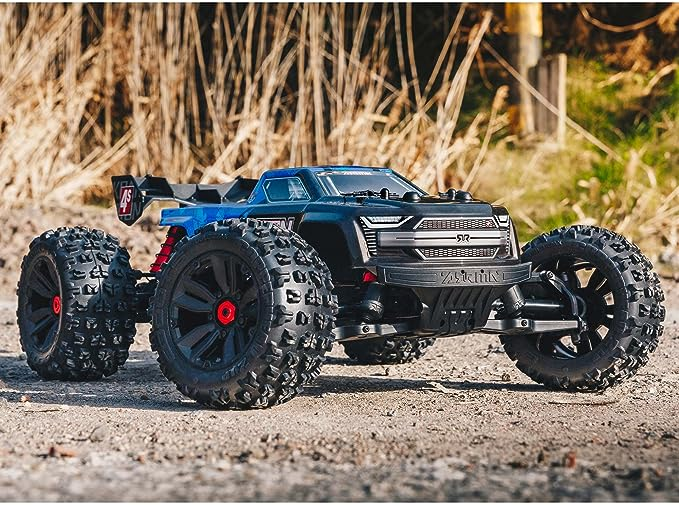
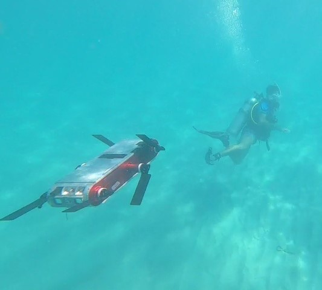
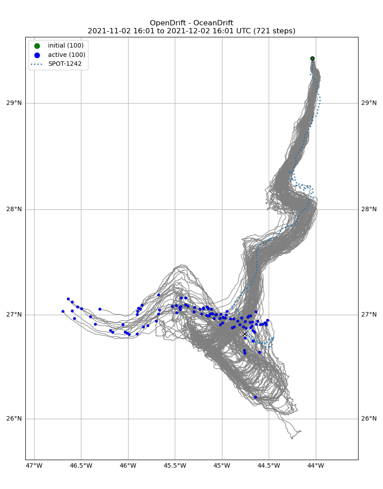

About
-
Bio
I am a computer scientist interested in deep learning, computer vision, and robotics. Much of my work focuses on active perception and learning models of physical processes to support decision-making.
I am currently a Machine Learning Researcher at the University of California, Irvine, where I develop deep learning models for climate and weather forecasting on sub-seasonal to seasonal timescales. Previously, I completed my M.Sc. in Computer Science at McGill University, where I worked in the Mobile Robotics Lab under the supervision of Dr. Gregory Dudek. My research focused on learning robust vision and control algorithms for autonomous underwater vehicles (AUVs). For my thesis, I built a robotic system to autonomously track, follow, and recover scuba divers, deploying it in the open ocean under harsh conditions. I also worked on an off-road navigation project, where we trained a transformer network to predict future terrain conditions from visual input and candidate action sequences, enabling an autonomous vehicle to stay on favorable terrain while navigating unmapped forests.
Prior to graduate school, I completed my B.Sc. at McGill University, majoring in Mathematics and Computer Science. As an undergraduate, I largely focused on software development/engineering and worked professionally as a software developer at Traction on Demand (now acquired by Salesforce), CloudOps, Sensequake, and ColorKarma.
- Experience
-
Education
- M.Sc. in Computer Science, McGill University | Graduated June 2024
- B.Sc in Mathematics and Computer Science, McGill University | Graduated May 2022
-
Research
-
Uncertainty-aware hybrid paradigm of nonlinear MPC and model-based RL for offroad navigation:
Exploration of transformers in the predictive model - Faraz Lotfi,
Khalil Virji, Farnoosh Faraji, Lucas Berry, Andrew Holliday, David Meger, and Gregory
Dudek

We investigate a hybrid control paradigm merging nonlinear model predictive control (MPC) and model-based reinforcement learning (RL) for autonomous navigation of a model car across offroad, unstructured terrains without predefined maps. Inspired by BADGR, an LSTM-based network designed to predict future events given an image and a sequence of control actions, we investigate the replacement of LSTM modules with transformers to greatly improve predictive performance. Addressing uncertainty, we train an ensemble of models, estimating the mutual information between weights and outputs to facilitate dynamic horizon planning through variable speeds. To account for intricacies of the vehicle's model and states, we also incorporate a nonlinear MPC into our control loop. The model-based RL module produces steering angles and quantifies inherent uncertainty, while the nonlinear MPC suggests optimal throttle settings considering vehicle intricacies. This allows a balance between goal attainment speed and model uncertainty. Our approach consistently outperforms baselines in predicting future events and integrates the vehicle's kinematic model for enhanced decision-making.
-
Robust Scuba Diver Tracking and Recovery in Open
Water Using YOLOv7, SORT, and Spiral Search - Faraz Lotfi, Khalil Virji, Gregory
Dudek

We address the challenge of underwater object tracking using a two-part approach: vision and control. Our method leverages AQUA, a highly-maneuverable underwater robot for open water experiments. We employ PID controllers for control and a spiral search algorithm for target recovery. Notably, our approach relies solely on image plane observations, eliminating the need for robot localization or camera calibration. By combining YOLOv7 for target detection, SORT filtering for temporal stability, and the spiral search algorithm for target recovery, we demonstrate strong long-term tracking performance on the VDD-C dataset and in open water experiments, even in strong currents.
-
DRIFT-NCRN: A Benchmark Dataset for Drifter Trajectory Prediction - Johanna Hansen,
Khalil Virji, Travis Manderson, David Meger, and Gregory Dudek

Due to intricate interactions between the ocean and the atmosphere, predicting the paths of floating objects in the ocean is challenging, especially for long-term horizons. Despite these complexities, long-term ocean trajectory prediction is vital for search and rescue operations, ecological research, and disaster response. Inspired by the DARPA Forecasting Floats in Turbulence challenge, we introduce an open-source benchmark dataset for evaluating ocean trajectory models. This dataset incorporates ocean drifter paths and historical wind and current data, aiming to advance machine learning models tailored to the complexities of drifter trajectory prediction. Alongside this benchmark dataset, we offer a baseline solution created using OpenDrift, an open-source tool for modeling object trajectories in the ocean and atmosphere.
-
Uncertainty-aware hybrid paradigm of nonlinear MPC and model-based RL for offroad navigation:
Exploration of transformers in the predictive model - Faraz Lotfi,
Khalil Virji, Farnoosh Faraji, Lucas Berry, Andrew Holliday, David Meger, and Gregory
Dudek
-
Projects
- Save a Minute | JavaScript, HTML, CSS
- Colosseum Survival | Python
- Automated Temperature and Humidity Monitoring System | Arduino, Node.js, MongoDB
- RFID Touchless Checkout System | Java, Arduino, UHF RFID Technology
- Legends Of Andor | Java, XML, SpringBoot, Android Studio
- Brick Breaker | JavaScript, HTML, CSS
- Connect Four | Java
- Tiny Shell | C
-
Web Design - Professional websites I created
for friends and family. (Links may be broken if hosting has expired.)
- Zenbroidery | Custom Embroidered Towels
- Bearclub | Recording artist from Vancouver, BC
- Zeenaz Cookbook | East African Style Indian Cuisine
-
Coursework
- COMP 579 - Reinforcement Learning • COMP 514 - Applied Robotics • COMP 551 - Applied Machine Learning • COMP 546 - Computational Perception • COMP 424 - Artificial Intelligence • COMP 558 - Fundamentals of Computer Vision • COMP 599 - Information Privacy and Security • COMP 417 - Robotics and Intelligent Systems • COMP 400 - Project in Computer Science • COMP 360 - Algorithm Design • COMP 330 - Theory of Computation • COMP 302 - Programming Languages and Paradigms • COMP 310 - Operating Systems • COMP 303 - Software Design • COMP 273 - Intro to Computer Systems • COMP 251 - Algorithms and Data Structures • COMP 206 - Intro to Software Systems • COMP 250 - Intro to Computer Science • COMP 202 - Foundations of Programming
- MATH 340 - Discrete Mathematics • MATH 314 - Advanced Calculus • MATH 317 - Numerical Analysis • MATH 348 - Euclidean Geometry • MATH 324 - Statistics • MATH 323 - Probability • MATH 315 - Ordinary Differential Equations • MATH 318 - Mathematical Logic • MATH 235 - Algebra 1 • MATH 236 - Algebra 2 • MATH 140 - Calculus 1 • MATH 141 - Calculus 2 • MATH 222 - Calculus 3 • MATH 242 - Analysis 1 • MATH 133 - Linear Algebra and Geometry
-
Certificates and Awards
- Graduate Research Enhancement and Travel (GREAT) Award | McGill University 2024
- Tomlinson Engagement Award for Mentoring | McGill University (2021, 2019 and 2018)
- MES Bourses d’excellence en sciences | McGill University 2021
- Salesforce Platform Developer 1 | 2020
- Microsoft Technology Associate: Database Fundamentals | 2019
- Microsoft Technology Associate: Introduction to Programming using Java | 2019